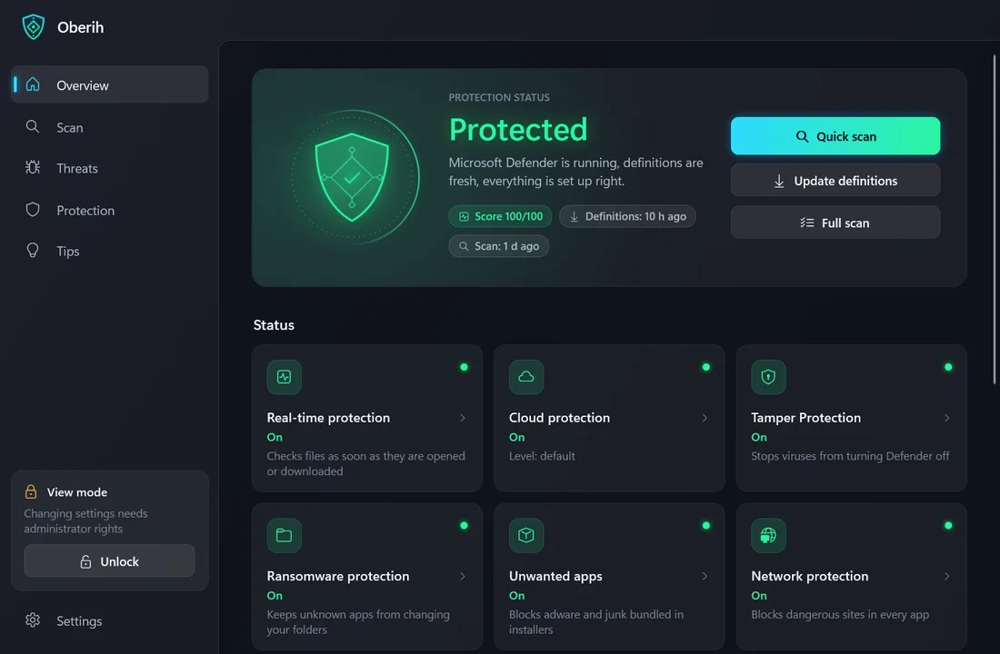
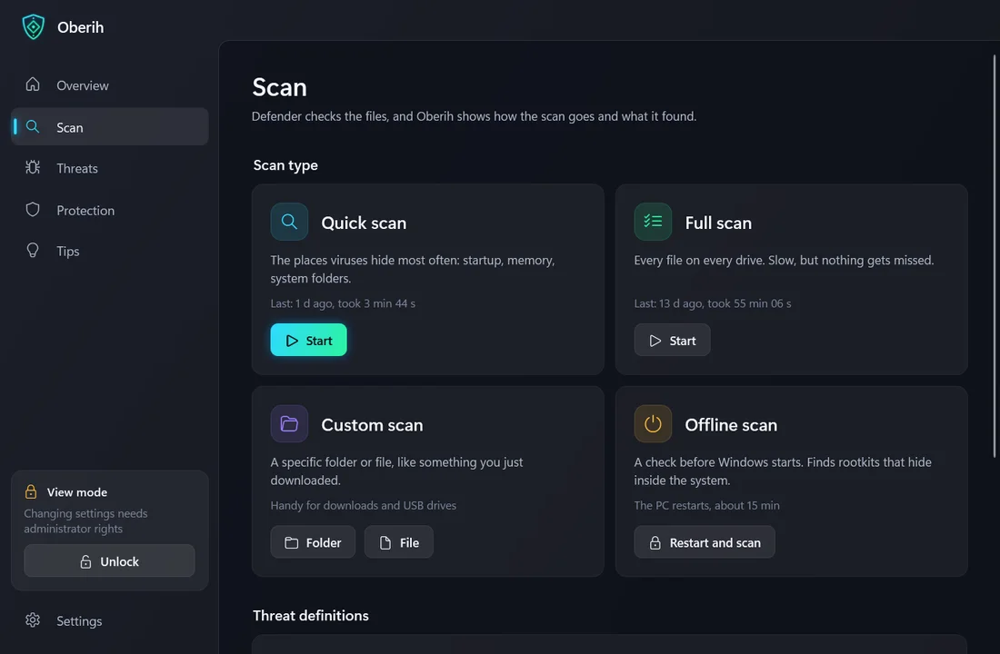
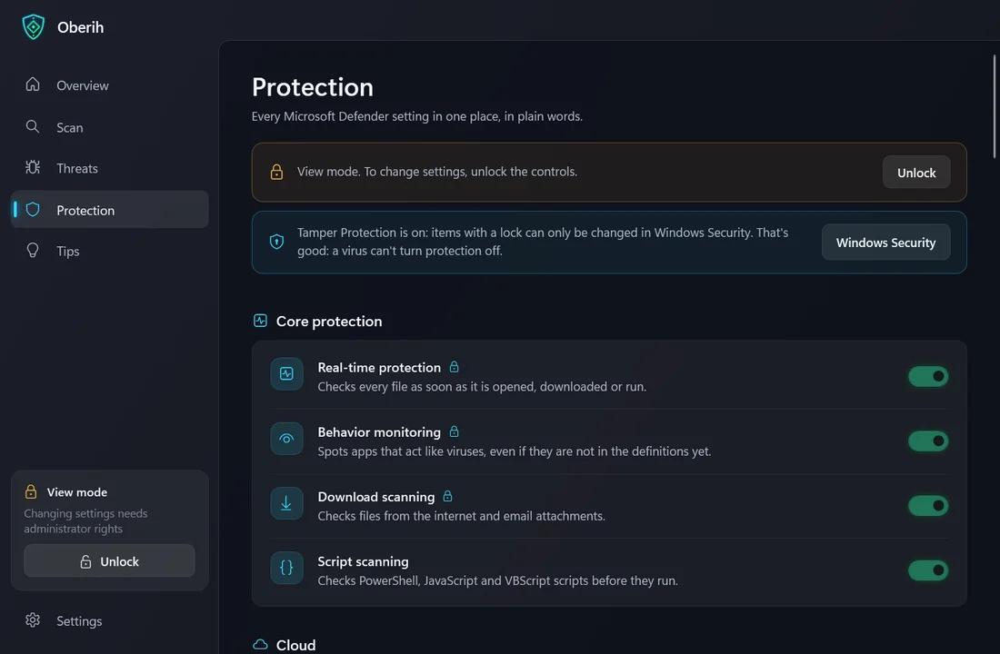

Windows 10 및 11(64비트)용
Oberih
Microsoft Defender를 위한 편리한 도우미
보호는 Windows에 기본으로 들어 있는 백신 Microsoft Defender가 맡아요. Oberih는 그 상태를 보여 주고, 검사를 실행하고, 모든 설정을 쉬운 말로 설명하고, 더 안전해지는 방법을 알려 줘요.
새 버전은 스스로 찾고, 설치는 내가 버튼을 눌러서 해요.
무료 · 광고 없음 · 27개 언어



작동 방식
Defender는 보호하고, Oberih는 Defender를 더 쉽게 쓸 수 있게 해 줘요.
- 1
다운로드하고 실행
위의 버튼으로 파일을 다운로드해서 실행하세요. Windows에서 경고가 나오면 추가 정보를 누른 다음 실행을 누르세요.
- 2
설치
Oberih는 스스로 설치할 것을 제안해요. 시작 메뉴와 바탕 화면 바로 가기, Windows 앱 목록의 항목, 앱 안에서의 업데이트가 추가돼요. 관리자 권한은 필요 없어요.
- 3
상태 확인
개요 화면은 PC가 보호되고 있는지, 무엇을 고쳐야 하는지 한눈에 보여 줘요. 버튼으로 검사를 실행하고 정의를 업데이트해요. 잠금 해제 후에는 알맞은 설정도 켜 줘요.
- 4
잠금 해제 후 변경
무언가를 바꾸려면 잠금 해제를 누르세요. Windows가 한 번 허락을 묻고, 권한은 창을 닫을 때까지만 유지돼요.
할 수 있는 일
한눈에 보는 상태
보호 상태를 보여 주는 방패와 실시간 보호, 클라우드 보호, 변조 방지, 방화벽, 메모리 무결성, 정의, Windows 업데이트, SmartScreen 등의 타일.
진행률이 보이는 검사
빠른 검사, 전체 검사, 사용자 지정(폴더나 파일) 검사, 오프라인 검사가 있어요. Defender는 진행 상황을 알려 주지 않으므로 퍼센트와 남은 시간은 추정값이에요. 다른 곳에서 시작한 검사도 표시돼요.
위협과 기록
Defender가 찾은 것, 관련된 프로그램, 탐지 기록, 내가 허용한 위협을 보여 줘요. 위험한 일을 하기 전에는 분명한 경고가 먼저 나와요.
모든 설정을 쉽게 설명
Microsoft Defender 설정 30가지 이상을 한곳에서 쉬운 말로 보여 줘요. 클라우드, 원치 않는 앱, 네트워크, 검사, 일정, 제외 항목이 있어요. “권장”은 안전한 선택을 표시해요.
바로 고칠 수 있는 팁
Oberih가 이 PC를 확인하고 개선할 점을 알려 주며, 버튼으로 바로 켜거나 알맞은 화면을 열 수 있어요. 비밀번호, 2단계 인증, 피싱, 게임 핵, 사기에 관한 팁 16개도 있어요.
랜섬웨어 보호
Oberih는 Defender의 랜섬웨어 방지 폴더 접근 제어를 켤 수 있어요. 알 수 없는 앱이 문서, 사진 등의 폴더를 바꾸지 못하게 해요.
내 언어, 내 스타일
27개 언어, 밝은 테마나 어두운 테마 또는 Windows와 같은 테마, 90~150 % 글자 크기.
안전한 자동 업데이트
열려 있는 동안에는 시작할 때와 12시간마다 새 버전을 확인하고, 내가 버튼을 누를 때만 설치해요. 업데이트는 제작자의 키로 서명되어 있어요. Oberih는 위조된 것을 설치하지 않아요.
도움이 되는 작은 기능들
0부터 100까지의 점수
Oberih는 이 PC에서 찾은 것을 하나의 숫자로 바꿔 주므로 얼마나 보호되고 있는지 한눈에 알 수 있어요.
새 위협 알림
Oberih가 열려 있는 동안 Defender가 무언가를 잡아내면 경고가 표시되고 소리가 나요. 창이 닫혀 있을 때는 감시하지 않아요.
위험한 제외 항목 표시
Defender가 드라이브 전체, 내 사용자 폴더, 다운로드, 또는 .exe나 .ps1 같은 프로그램 형식을 건너뛰도록 설정되어 있으면 알려 줘요.
설치 없이 실행
내려받은 파일을 그대로 실행하세요. 설치할 .NET도, 내가 해야 할 일도 없어요. 설치하면 바로 가기와 앱 내 업데이트만 추가돼요.
무료 · 광고와 추적 없음 · 백그라운드 서비스도, 자동 시작도 없어요
자주 묻는 질문
Windows에서 ‘Windows의 PC 보호’라는 창이 떠요. 괜찮은가요?
네. Windows는 유료 코드 서명 인증서가 없는 앱처럼 잘 알지 못하는 파일에 이 메시지를 표시하는데, Oberih에는 그 인증서가 없어요. 글 아래의 추가 정보를 누른 다음 실행 안 함이 아니라 실행을 누르세요. Oberih의 자체 업데이트는 제작자의 키로 서명되어 있으며 설치 전에 검증돼요.
Oberih는 백신인가요?
아니요. 모든 검사와 보호는 Windows에 기본으로 들어 있는 백신 Microsoft Defender가 해요. Oberih는 그 상태를 보여 주고, 설정을 관리하고, 쉬운 말로 설명해 줘요. 다른 백신이 보호를 맡고 있으면 Defender는 대기 상태가 되고, Oberih가 그 사실을 알려 줘요.
왜 관리자 권한이 필요한가요?
제외 목록과 격리를 제외하면 보기만 하는 데는 필요하지 않아요. 설정과 제외 항목 변경, 위협 허용, 격리에서 복원, 오프라인 검사, 검사 중지에는 필요해요. 잠금 해제를 누르면 Windows가 한 번 물어보고, 그 권한은 창을 닫을 때까지 유지돼요. Oberih에는 다른 사람의 요청으로 설정을 바꿀 수 있는 백그라운드 서비스가 없고, 잠금을 풀기 전에 자기 파일이 시작된 뒤 바뀌지 않았는지 확인해요.
변조 방지가 설정을 막으면 어떻게 하나요?
Oberih는 이를 우회하지 않아요. 변조 방지가 지키는 설정은 자물쇠와 함께 표시되고 Windows 보안에서만 바꿀 수 있어요. 오히려 좋은 일이에요. 바이러스도 보호를 끌 수 없으니까요.
어떻게 삭제하나요?
Windows 설정 → 앱에서 Oberih를 찾아 제거를 선택하거나, Oberih 설정의 버튼을 사용하세요. 앱, 바로 가기, 설정이 삭제되며, Microsoft Defender와 그 모든 설정은 그대로 남아요. Defender에서 내가 바꾼 것, 예를 들어 제외 항목도 그대로 남아요. 설치하지 않고 내려받은 파일만 실행했다면, 그 파일과 폴더 %LOCALAPPDATA%\Oberih를 삭제하세요.
업데이트는 어떻게 이루어지나요?
Oberih가 열려 있는 동안, 자동 확인이 켜져 있으면(기본값이에요) 시작할 때와 12시간마다 pegasohlib.com에서 작은 파일을 읽어요. 더 새로운 버전이 있으면 버튼이 나타나요. 내가 버튼을 누를 때만 GitHub에서 파일을 내려받고, 서명과 체크섬을 확인한 뒤 Oberih가 새 버전으로 다시 시작해요.
새로운 내용: 0.3.6
이제 개요에 ‘보호됨’ 대신 ‘문제가 발견되지 않았어요’가 표시되고, 더 많은 Defender 설정을 반영하며, 다른 바이러스 백신의 상태를 읽고, 읽지 못한 항목은 ‘확인 안 됨’으로 표시해요. 더 많은 위험한 변경에서 먼저 확인을 요청해요. 설치 창에 개인정보 링크와 동의 문구가 추가됐어요.
파일은 어떻게 확인하나요?
다운로드한 파일의 SHA-256 체크섬이 다음 값과 일치해야 합니다:
데이터는 내 PC에만 남아요
Oberih는 데이터를 수집하지 않고, 서버도, 광고도, 추적도 없어요. 업데이트를 확인하고 GitHub에서 내려받을 때만 온라인에 접속하며, 자동 확인은 끌 수 있어요.
개인정보 처리방침 읽기질문과 아이디어: support@pegasohlib.com